前言
此篇會介紹資料表的基礎操作，包含新增、修改以及刪除，針對不同的執行動作來介紹操作方法，執行方法基本上有三種，但不一定每個執行動作都會有三種方式。
- 使用 SQL Server Management Studio 管理介面操作
- 執行 T-SQL 指令（使用 DDL 提供的語法來編輯資料表）
- 使用系統預存
目錄
- 建立資料表
- 修改資料表
- 重新命名資料表
- 新增資料行
- 修改資料行
- 刪除資料行
- 複製資料行定義
- 重新命名資料行
- 插入資料行
- 搬移資料行
- 刪除資料表
建立資料表
Security：開始建立前先檢查是否有 CREATE TABLE 及 ALTER 的權限
使用 Management Studio 管理介面
Step 1
展開 SQL Server 執行個體，對欲增加資料表的資料庫執行右鍵，指向［新增］，選擇［資料表］
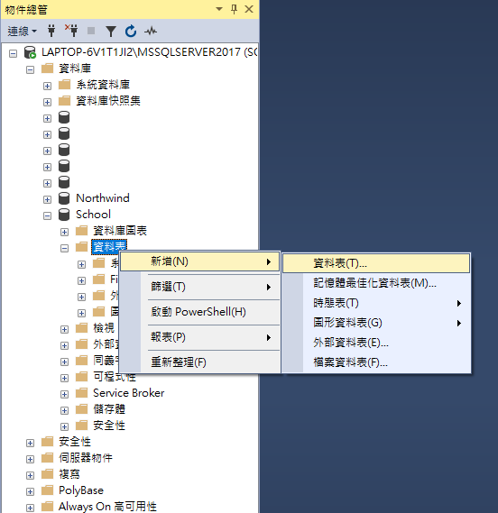
Step 2
開啟資料表欄位定義編輯畫面，輸入欲增加的資料行定義
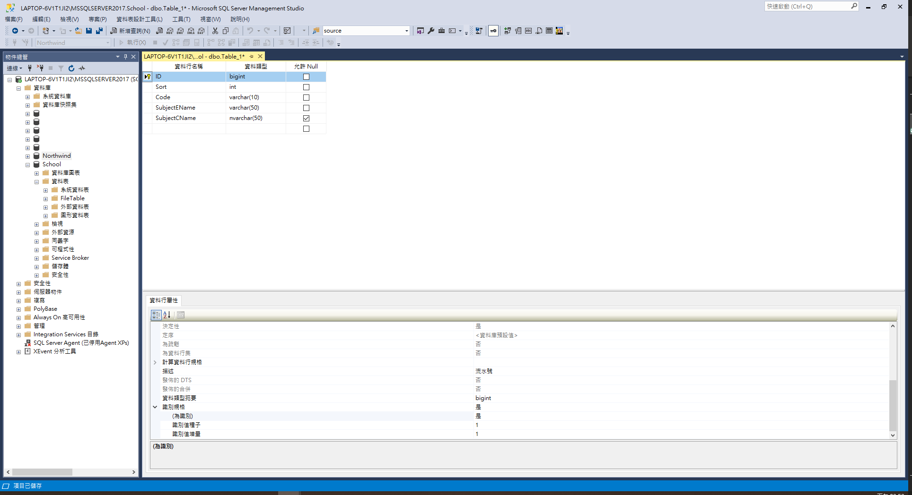
Step 3
對檔案執行右鍵，選擇［儲存 Table_1］
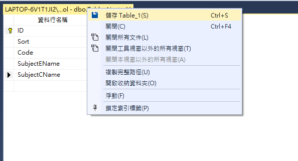
Step 4
在選擇名稱對話方框中輸入資料表名稱
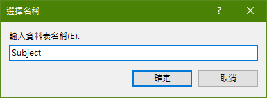
Step 5
重新展開資料表下可以看到剛才新增的資料表，若未看到請重新整理。
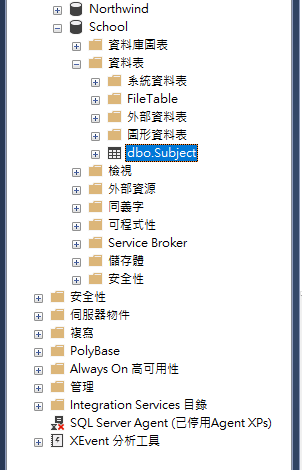
執行 T-SQL 指令
基本語法規則
1 | CREATE TABLE 資料表名稱 |
執行下列指令碼
1 | CREATE TABLE Subject |
修改資料表
重新命名資料表
注意的是重新命名資料表並不會自動更新資料表的參考，必須手動修改參考資料表的物件，例如觸發程序參考的資料表，而重新命名前需要有 ALTER 權限。
使用 Management Studio 管理介面
Step 1
展開 SQL Server 執行個體，展開［資料庫］節點，指性欲變更的資料庫及資料表名稱，執行右鍵，選擇［重新命名］
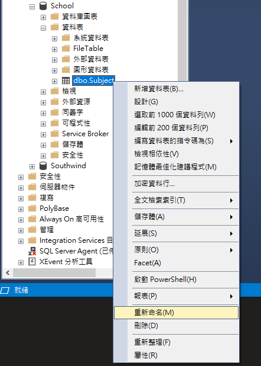
Step 2
輸入新的命名，Enter 完成命名
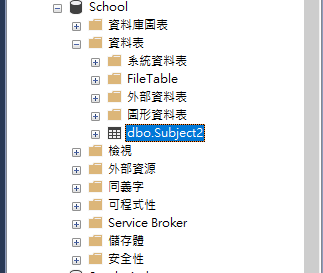
使用系統預存程序
使用 EXEC 指令，參考規則如下
1 | EXEC sp_rename 物件名稱, 新物件名稱 |
執行下列程式碼
1 | use School |
新增資料行
新增前須有 ALTER 權限
使用 Management Studio 管理介面
Step 1
對欲增加資料行的資料表執行右鍵，選擇［設計］
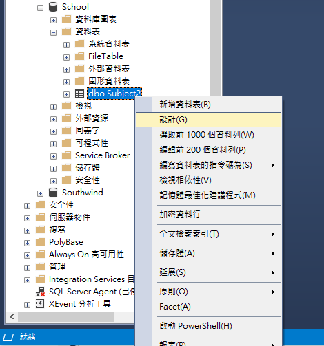
Step 2
選取［資料行名稱］空白資料格，在資料格輸入資料行名稱
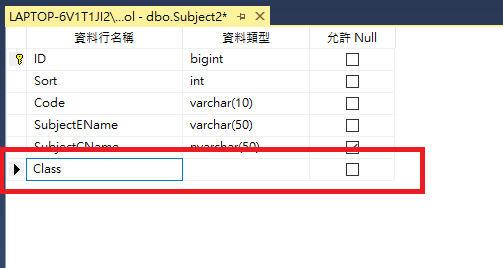
Step 3
移至［資料類型］選擇資料型別，也可使用 TAB 移動
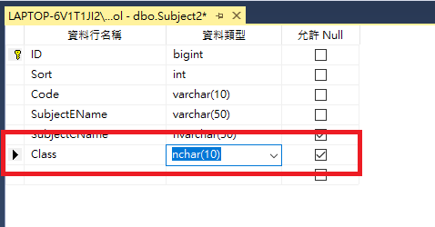
Step 4
移至［資料行屬性］指定該欄位是否允許 Null，若未選取則為預設值
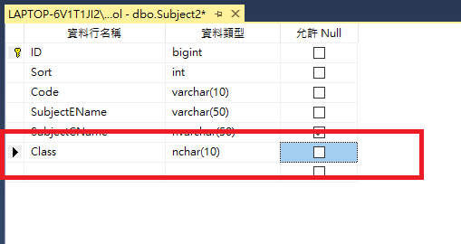
Step 5
執行工具列上［儲存圖示］來保存資料表變更，或［檔案］內的［儲存］，也可使用快捷鍵 Ctrl+S
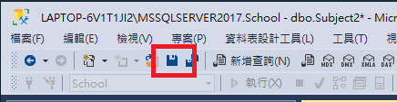
執行 T-SQL 指令
執行下列語法，來增加資料行
1 | ALTER TABLE dbo.Subject2 |
修改資料行
在修改資料行前一樣要有 ALTER 權限，而使用介面上操作與新增相同，可以直接對已存在資料行作變更再儲存，下列介紹使用 T-SQL 指令要如何修改資料行型別
1 | ALTER TABLE dbo.Subject2 |
刪除資料行
刪除前須先移除所有 Foreign Key 條件約束及 Primary Key 或其他相依性的資料行，以及 ALTER 的權限
物件總管
Step 1
對欲刪除的資料行執行右鍵，選擇［刪除］
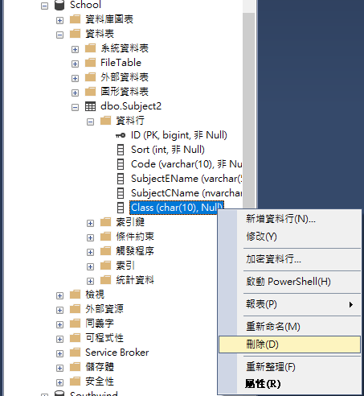
Step 2
在刪除物件對話框中，執行［確定］來完成刪除資料行
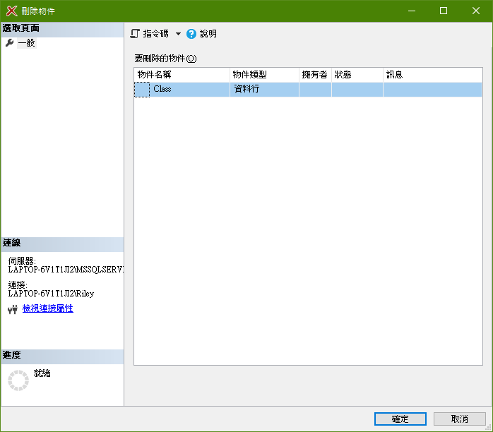
資料表設計工具
開啟資料表設計工具，對欲刪除的資料行執行右鍵，選擇［刪除資料行］，再儲存完成變更
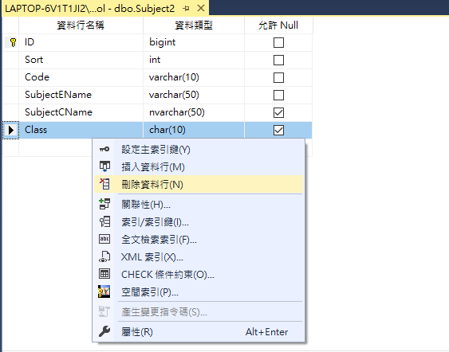
執行 T-SQL 指令
1 | ALTER TABLE dbo.Subject2 |
複製資料行定義
一樣需要 ALTER 權限，而複製資料行定義很簡單，也可使用 Ctrl＋C 和 Ctrl＋V 完成
Step 1
在資料表設計工具選取要複製的行，到［編輯］選擇［複製］
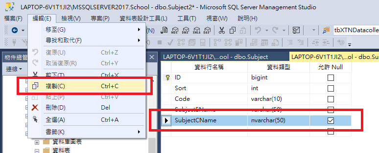
Step 2
到欲貼上的資料表開啟資料表設計工具，一樣到［編輯］選擇［貼上］
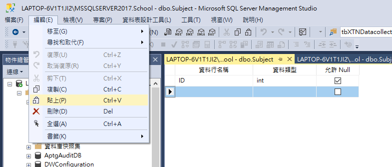
重新命名資料行
可以在物件總管及資料表設計工具重新命名，在物件總管中對欲更名的資料行執行右鍵，選擇［重新命名］，接著輸入名稱執行 Enter 即可；而資料表設計工具與新增或修改變更方式相同，最後執行儲存完成變更；也可執行 T-SQL 指令來重新命名
1 | EXEC sp_rename 'dbo.Subject2.Code', 'CodeID', 'COLUMN' |
插入資料行
若想在兩資料行中間加入新的資料行，可以對欲插入的資料行執行右鍵，選擇［插入資料行］
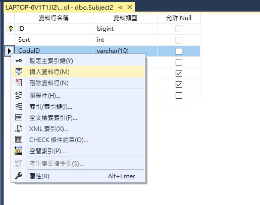
搬移資料行
若想變更資料行的順序，選取該資料行並按住左鍵，就可以拖移資料行，拖移的過程中會顯示水平線來表示要插入的位置。
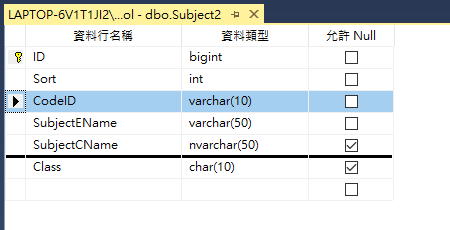
刪除資料表
刪除資料表前…
Limitations and Restrictions：無法卸除 Foreign Key 條件約束所參考的資料表，需先卸除參考 Foreign Key 條件約束或者參考資料表
Security：需要資料表結構描述的 ALTER 權限、資料表 CONTROL 權限或 db_ddladmin 固定資料庫角色成員資格
使用 Management Studio 管理介面
Step 1
展開 SQL Server 執行個體，指向欲刪除的資料表執行右鍵，選擇［刪除］
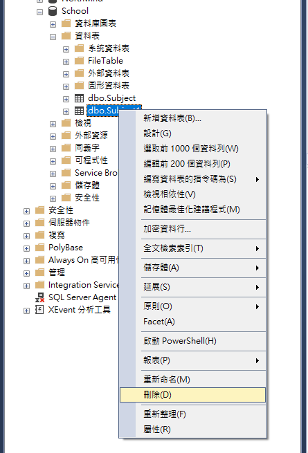
Step 2
執行刪除物件對話方框的［確定］，完成刪除資料表。
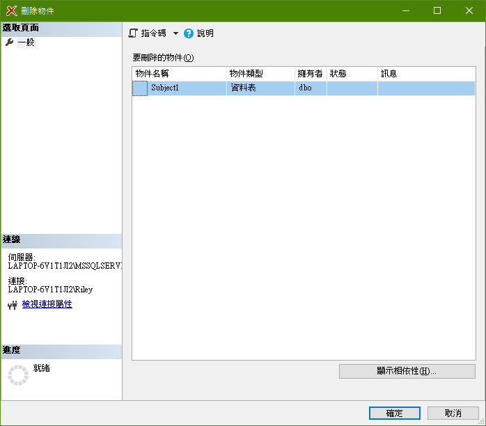
執行 T-SQL 指令
基本語法規則
1 | DROP TABLE 資料表名稱 |
執行下列指令碼
1 | DROP TABLE Subject1 |
Reference
Create Tables
Rename Tables
Add Columns to a Table
Modify Columns
Delete Columns from a Table
Copy Columns from One Table to Another
Rename Columns
Change Column Order in a Table
Delete Tables